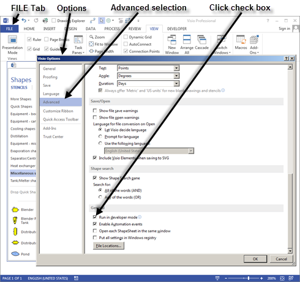
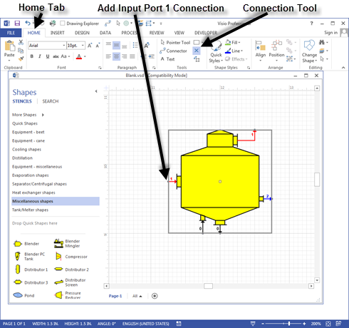
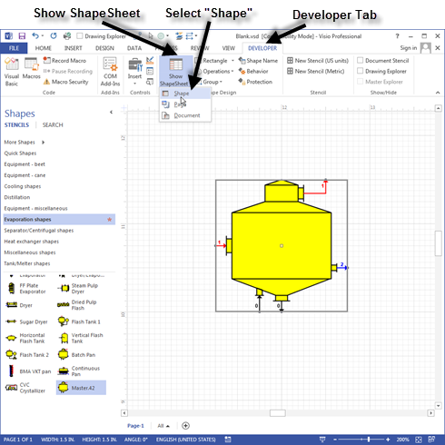
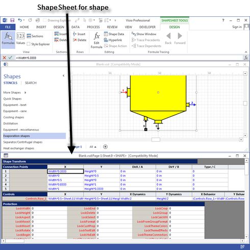
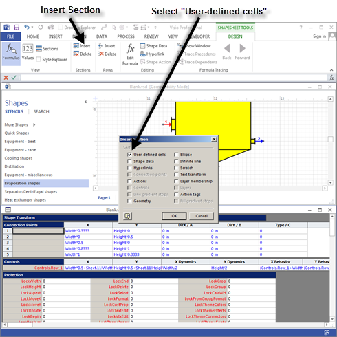
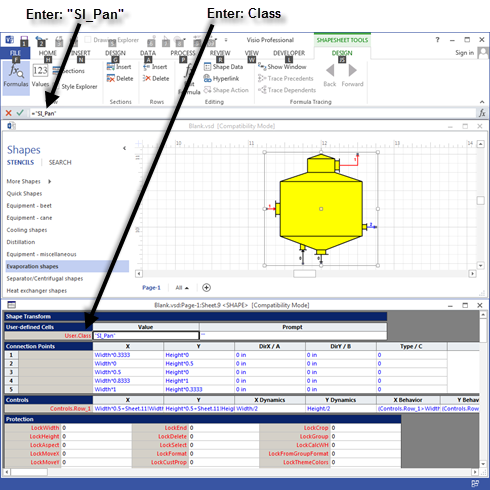
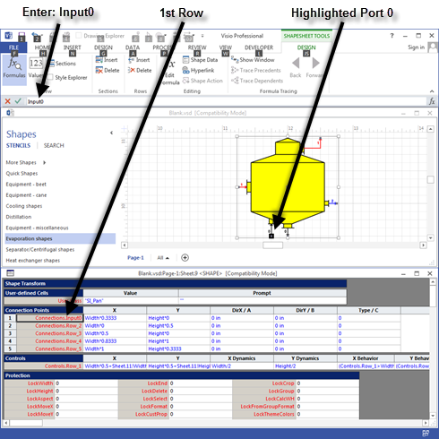
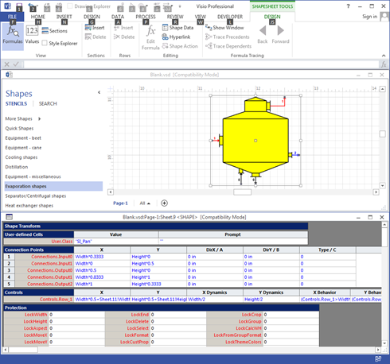

Visio Developer Mode is necessary to design shapes for use with Sugars. Activate Developer Mode by clicking FILE > Options > Advanced and then click the box for "Run in developer mode" (see screen below). Click the OK button to return to the drawing window.

Custom shapes of Sugars stations can be designed using the Visio Drawing Tools. Open the Blank drawing in the "C:\Program Files\Sugars\Examples" sub-directory. Create the shape and use the Group selection on the DEVELOPER tab to group all of the shape's elements into one grouped assembly. After the shape is drawn and grouped, use the Connection Point Tool on the Visio Drawing Toolbar as shown on the screen below to make the input and output connections. Make sure the shape is highlighted with a border around it and click the left mouse button on the connection tool. Hold the Control key down and position the cursor at the points on the shape where the connections are to be added. Click the left mouse button at each point and a magenta colored ■ should appear as each new connection point is added. The connections should be made in the order of the ports; i.e., for the pan station shown in the figure below, input port 0 first, input port 1 next, then output port 0, output port 1, and output port 2 last.

A text field must be added that Sugars can use to assign a station number to the shape as it is added to a flow diagram. The Visio SmartShape Wizard can be used to create the text box. The SmartShape Wizard is located in the C:\Program Files\Sugars\Utilities directory. Highlight the new shape and then double click the wizard from Windows Explorer (or make a shortcut to the wizard on the Desktop). The wizard options are self-explanatory, and it will create a text field to be the top most field in the order of the shapes.
A station name must be assigned so Sugars will recognize the new shape. Highlight the shape so that there is a selection border around the shape. Click DEVELOPER > Show ShapeSheet > Shape as shown on the screen below.

This will open the ShapeSheet for the new shape. The ShapeSheet has several sections that are used to control the behavior of the shape. The screen below shows the ShapeSheet in the Visio window.

The ShapeSheet in the screen above shows a Connection Points section, but a User-defined cells section is needed to name the shape. The User-defined cells section can be added by clicking Insert in the Sections group on the Visio ribbon (see screen below) and then clicking the User-defined cells box.

Click on the first cell in the first row under User-defined Cells and type Class in the cell editing area. Click on the green check next to the entry field, or press the Enter key when done. Click on the cell in the first row under Value in the User-defined Cells area. Enter the name of the shape with quotation marks around the name in the cell editing space and click the green check next to the entry field, or press the Enter key when finished. For example, type "SI_Pan" to name a pan shape (see screen below). This is the name Sugars will recognize when the shape is dragged from a stencil and dropped onto a drawing.

Next the connection points need to be identified so they can be recognized by Sugars as the shape is added to a drawing. Use the following procedure to identify the input and output connections.
Make sure the shape is highlighted with the green border and the shape sheet is shown. On the shape sheet, click on the first cell in the first row under Connection Points and type in the port number in the entry field next to the green check at the top of the window. Input port numbers start with Input0 and are numbered in sequence. The input port numbers must coincide with the flows into the station in the same relationship as they are for all stations of the same type. For example, a Pan station has two input ports. Input port 0 (Input0) is for syrup and Input port 1 (Input1) is for steam/vapor. A black box is shown around the connection point on the shape as each cell (row) of the Connections Points is checked.
As shown in the screen below at the top of the window, the name of the first input connection (syrup) is entered as Input0 (do not enclose the entry in quotation marks " "). Enter Input1 on Row_2 for the second input connection (steam/vapor) for the pan. Click on the green check next to the input box, or press Enter when finished with the entry. Type Output0 for the first output connection (massecuite), Output1 for the second output connection (vapor) and Output2 for the third output connection (condensate). Be sure to label each connection correctly for the type of input and output flow.

The ShapeSheet should look as shown in the screen below where the shape name is in the User-defined Cells in the User.Class row and “SI_Pan” is in the Value column. Also, each connection point for the ports into and out of the station are listed and named.

Close the ShapeSheet.
The new shape is now ready to be placed on a stencil for use in building flow diagrams. To place the new shape on a stencil, open the stencil and then right click on the stencil title bar and select Edit Stencil from the drop-down menu. Then drag the new shape from the drawing on to the stencil. Once the shape is on the stencil, the shape can be named by selecting the stencil and then using the Edit Master > Master Properties… to name the shape and enter text for the prompt.
Save the stencil with the new shape by right clicking the stencil title bar and selecting Save As… from the drop-down menu and saving the new stencil under the same name, or giving it a new name. The stencil can be used with any other drawing by opening it as a stencil from the drawing. It is best to not add custom shapes to the Sugars stencils because these custom shapes may become lost when Sugars is updated with a new version at a later time and the Sugars stencils could be overwritten with the update.